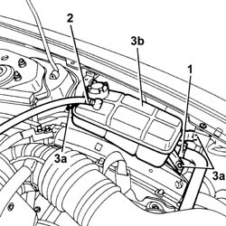
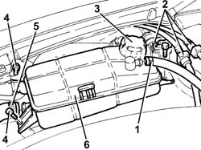
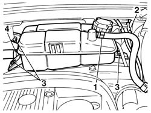
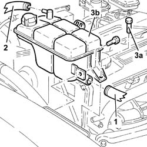
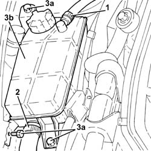
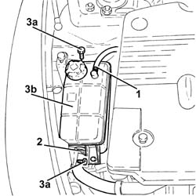

1088B10 engine cooling tank - r + r
- Path
- Procedures > 10 ENGINE > 1088 ENGINE COOLING > 1088B ENGINE COOLING RADIATOR > 1088B10 engine cooling tank - r + r
- Kind
- repair procedure (removal / refitting; the operation number is the code)
- Applies to
- engines: 1.6 TS , 1.8 TS, 2.0 JTS, 2.5 V6, 3.2 V6, 1.9 JTD 8v , 1.9 JTD 16v, 2.0 JTS, 2.4 JTD 10v, 2.4 JTD 20v; all production periods
- Interactive page
- https://sloeber94.github.io/elrnDB-a156/en/#/3237624
Applies to: engines: 2.5 V6; all production periods
 Removing
Removing
 Refitting
Refitting1. Disconnect the system supply pipe from the engine coolant tank.
2. Disconnect the coolant return pipe from the engine coolant tank.
3. Undo the bolt (3a) and remove the engine coolant tank (3b).

Applies to: engines: 2.5 V6; all production periods
Refitting
RemovingFit the engine coolant tank and fix it using the bolt.
Connect the coolant return pipe to the engine coolant tank.
Connect the system supply pipe to the engine coolant tank.
Supply the engine cooling system with the recommended fluid.
 | Type | Component | Name | Qty. |
|---|---|---|---|---|
- | Fluid [l] | ENGINE COOLING CIRCUIT | Mixture 50% Paraflu11 for Alfa Romeo/distilled water | 9.2 |
Applies to: engines: 3.2 V6; all production periods
Removing
Refitting1. Loosen the band and disconnect the coolant return pipe from the engine coolant reservoir.
2. Release the fuel vapour recovery pipes from the fastenings near the engine coolant supply reservoir.
3. Remove the plug and drain the coolant from the reservoir using a suitable syringe.
4. Undo bolts securing the engine cooling reservoir
5. Loosen the band and disconnect the supply pipe from the engine coolant reservoir.
6. Remove the engine coolant reservoir.

Applies to: engines: 3.2 V6; all production periods
Refitting
RemovingPlace the engine coolant reservoir back in it housing.
Connect the engine coolant reservoir supply pipe and tighten the band.
Tighten the coolant reservoir fixing bolts.
Secure the fuel vapour recovery pipes to the fastenings near the engine coolant supply reservoir.
Connect the coolant return pipe to the engine coolant reservoir and tighten the band.
Top up the engine cooling system with the recommended fluid.
| Type | Component | Name | Qty. |
|---|---|---|---|---|
- | Fluid [l] | ENGINE COOLING CIRCUIT | Mixture 50% Paraflu11 for Alfa Romeo/distilled water | 9.2 |
Applies to: engines: 1.6 TS , 1.8 TS; all production periods
Removing
Refitting1. Loosen the band and disconnect the breather pipe from the engine coolant reservoir.
2. Release the petrol vapour breather pipes from the plastic supports and move them aside.
Draw off the engine coolant using a suitable syringe.
3. Undo the 3 bolts fastening the reservoir.
4. Loosen the band and disconnect the rubber hose from the supply reservoir and remove it from the engine compartment.

Applies to: engines: 1.6 TS , 1.8 TS; all production periods
Refitting
RemovingPosition the engine coolant supply reservoir in the housing and connect the rubber hose, tightening the band.
Tighten the 3 bolts fastening the reservoir and reposition the petrol breather pipes attaching them to the plastic supports.
Connect the tank breather pipe and tighten the band.
Refill the engine cooling system with coolant.
| Type | Component | Name | Qty. |
|---|---|---|---|---|
- | Fluid | ENGINE COOLING CIRCUIT | Mixture 50% Paraflu11 for Alfa Romeo/distilled water | 6.9 |
Applies to: engines: 2.0 JTS, 2.0 JTS; all production periods
Removing
Refitting1. Loosen the band and disconnect the coolant return pipe from the engine coolant reservoir.
2. Release the fuel vapour recovery pipes from the fastenings near the engine coolant supply reservoir.
3. Remove the plug and drain the coolant from the reservoir using a suitable syringe.
4. Undo bolts securing the engine cooling reservoir
5. Loosen the band and disconnect the supply pipe from the engine coolant reservoir.
6. Remove the engine coolant reservoir.
Applies to: engines: 2.0 JTS, 2.0 JTS; all production periods
Refitting
RemovingPlace the engine coolant reservoir back in it housing.
Connect the engine coolant reservoir supply pipe and tighten the band.
Tighten the coolant reservoir fixing bolts.
Secure the fuel vapour recovery pipes to the fastenings near the engine coolant supply reservoir.
Connect the coolant return pipe to the engine coolant reservoir and tighten the band.
Top up the engine cooling circuit 0010T20 coolant change .
Applies to: engines: 1.9 JTD 8v , 2.4 JTD 10v; all production periods
Removing
Refitting1. Disconnect the system supply pipe from the engine coolant tank.
2. Disconnect the return pipe from the engine coolant tank.
3. Undo the bolt (3a) and remove the engine coolant tank (3b).

Applies to: engines: 1.9 JTD 8v , 2.4 JTD 10v; all production periods
Refitting
RemovingFit the engine coolant tank and fix it using the bolt.
Connect the return pipe to the engine coolant tank.
Connect the system supply pipe to the engine coolant tank.
Applies to: engines: 1.9 JTD 8v ; all production periods
Top up the engine cooling system with coolant.
| Type | Component | Name | Qty. |
|---|---|---|---|---|
- | Fluid | ENGINE COOLING CIRCUIT | Mixture 50% Paraflu11 for Alfa Romeo/distilled water | 6.1 |
Applies to: engines: 2.4 JTD 10v; all production periods
Top up the engine cooling system with coolant.
| Type | Component | Name | Qty. |
|---|---|---|---|---|
- | Fluid [l] | ENGINE COOLING CIRCUIT | Mixture of 50% Paraflu11/distilled water | 6.8 |
Applies to: engines: 1.9 JTD 16v; all production periods
Removing
RefittingProceed with removal 1016A10 sound-proofing cover - r + r .
Draw off coolant from the engine coolant tank using a suitable syringe.
1. Loosen the band and disconenct the return pipe to the coolant reservoir, reservoir side.
2. Loosen the band and disconnect the supply pipe, reservoir side.
3. Undo the bolt (3a) and remove the engine coolant tank (3b).

Applies to: engines: 1.9 JTD 16v; all production periods
Refitting
RemovingRefit the coolant reservoir in its seating and secure with its bolt.
Connect the supply pipe, reservoir side and tighten the band.
Connect the return pipe to the engine coolant reservoir, reservoir side and tighten the band.
Refill the engine cooling system with coolant 0010T20 coolant change .
Proceed with refitting 1016A10 sound-proofing cover - r + r .
Applies to: engines: 2.4 JTD 20v; all production periods
Removing
RefittingDraw off coolant from the engine coolant tank using a suitable syringe.
1. Loosen the band and disconnect the return pipe to the coolant reservoir, reservoir side.
2. Loosen the band and disconnect the supply pipe, reservoir side.
3. Undo the bolt (3a) and remove the engine coolant tank (3b).

Applies to: engines: 2.4 JTD 20v; all production periods
Refitting
RemovingRefit the coolant reservoir in its seating and secure with its bolts.
Connect the supply pipe, reservoir side and tighten the band.
Connect the return pipe to the engine coolant reservoir, reservoir side and tighten the band.
Refill the engine cooling system with coolant 0010T20 coolant change .